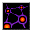

DCSS スポイラー
入口
モンスター
呪文
アイテム
固定アーティファクト
種族
職業
神
ダンジョン
変異
事典
wiki 翻訳
移動の魔法書
Book of Movement
英語版 CrawlWiki の記事「
Book of Movement
」(0.34 向け、2026-05-19 版)の翻訳です。原文の著者は
編集履歴
をご覧ください。
移動の魔法書
主な系統
転位術
ほんの少し触れただけで勢いよく開くように見える魔法書だ。その記述はひとつの呪文の説明から別の呪文へとせわしなく飛び移り、本当に理解できるだけの情報があるのはごく一部の呪文だけだが、いずれも何らかの形で移動に関わるもののようだ。
呪文
タイル
呪文
系統
レベル

a -
不安定な爆発塵
炎
/
転位術
3
b -
ヴィーの電撃突進
風
/
転位術
4
c -
ゲルのガヴォット
転位術
6
変更履歴
この魔法書は
0.32
で追加された。